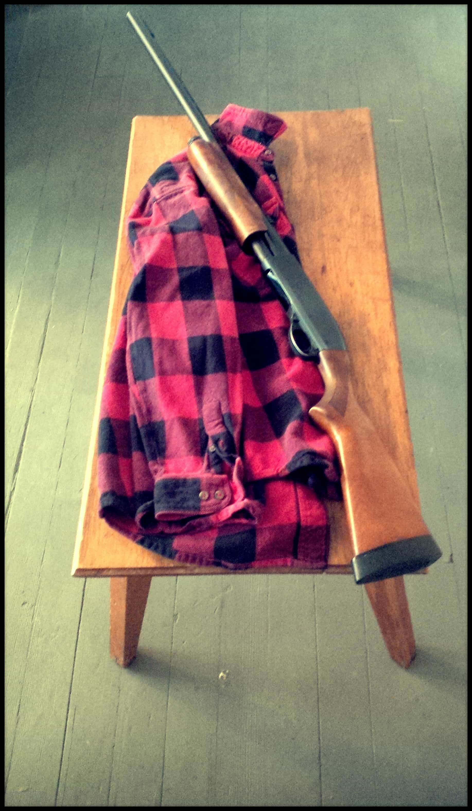
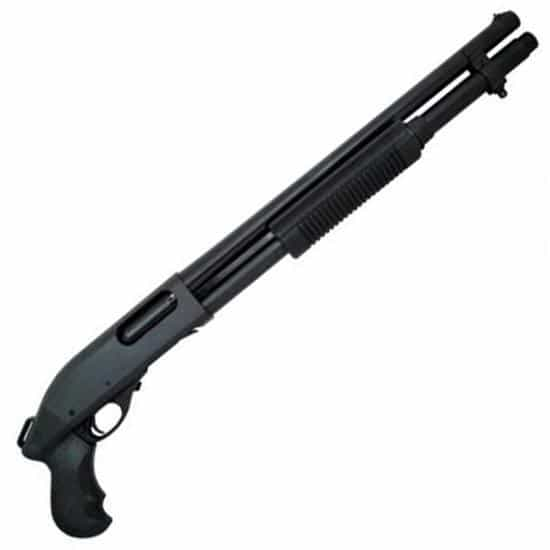
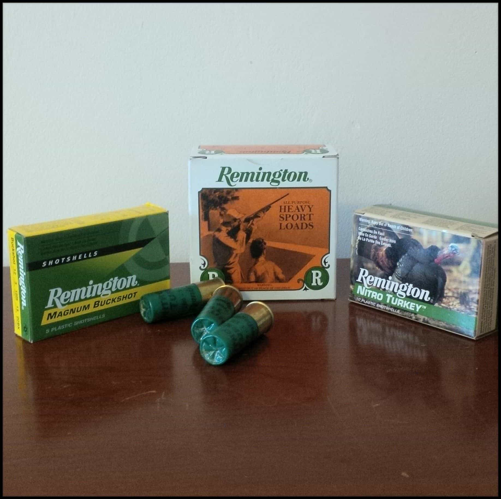

Forest was born and raised in the rugged mountains of northern New England. He continues to work and play in these woods...everyday. A seeker of truth - he loves beauty, freedom, authenticity and knowledge.


Have you ever wanted to own a caliber of gun that is all around useful? If you are anything like me, you are not a man with unlimited funds. This means that when you make an expensive purchase—like a gun—you want it to be as versatile as possible. You need it to be a tool that can provide protection, recreation, and also bring home the game to put on the table. It needs to be both versatile and affordable.
Is it even possible that such a gun exists? Well, I’m happy to let you know that there is.
Having spent the majority of my life in the woods—a large percentage of it hunting—I have found that if given only one choice for a caliber of gun, it would be a 12 GA pump shotgun. If there ever was a more practical, affordable, and versatile caliber of gun… I can’t think of one. Without any glitz or fanfare, it’s a gun that gets the job done. Whether its protection, hunting, or sport, this caliber of gun covers it all.
Personally, I have owned one for over twenty years and I use it regularly throughout the year. Beginning with turkey hunting in the spring, followed by grouse hunting in the early fall, then deer hunting in the late fall, and rounding it all out with grouse hunting again into early winter… this gun gets a solid workout.
In the time between, it sits in the corner of my bedroom as one of my primary lines of defense, should anyone be foolish enough to break into my house. During the summer months, it also occasionally gets used to bust clay pigeons down at the range.
Some would argue that there are more superior calibers for hunting deer, but in my experience, the areas where I hunt—northern New England—are perfectly suited for this caliber of gun. Its a region filled with very dense woods and swamps where short, quick shots are the norm, not the exception. When hunting in this type of cover, a high-caliber rifle with a scope can end up being a hindrance.

Good question! Owning and using both single-shots and semi-automatics for hunting has shown me that when it comes to getting the perfect trifecta of functionality, reliability, and affordability—an all in one gun—the pump wins hands down. It gives you the luxury of shooting a number of shots in quick succession without costing you a premium, nor does it require an abundance of rings and gaskets that can potentially fail. What’s not to like?
Yes. There are a few well-known, easily available brands, all with a track record of proven performance: Winchester, Mossberg, and Remington to name a few. All of them are well-made and able to get the job done.
There are also lesser known (and cheaper) brands in the affordable 12 GA pump category. In the interest of saving money, the temptation might be to go with one of them. However, experience has shown me that you get what you pay for. If you only pay $150 for an obscure brand of pump shotgun, you will probably get a cheap gun that doesn’t hold up. Basically a piece of crap that you won’t really end up liking.
All that aside, if I had to pick my favorite brand for an affordable 12 GA shotgun, it would be the Remington 870.
It all boils down to the following: reliability, availability, and affordability.
Through tough conditions, hard use, and a lack of regular cleanings, I have never seen a brand of shotgun perform as well as this make and model. Rain, snow, dirt, grime, heat and cold… it’s a gun that never quits. When I have needed the gun to work, it has never failed. This alone makes it stand out.
Despite twenty years of very hard use, there has only been one small issue with something in the receiver. This was brought on due to my failure to pull the pins and air-hose out the receiver on a regular basis. In other words, negligent maintenance. Despite this issue, the gun continued to do its job without fail.
With over 10 million manufactured since 1951, they are prolific. This will help you when a part needs to be replaced or if you are looking to purchase additions for it. Also, if things get really bad (societal collapse), a brand as abundant as this will be very easy to get any parts for. That is something worth thinking about.
With so many in circulation, the supply is abundant, giving you a versatile gun that can be purchased on the cheap. For less than $300, you can purchase a well-maintained, used one that will last you for the rest of your lifetime. Now that’s receiving good value for your money spent! 
No. A used and well-maintained Remington 870 with a smooth bore 18″ barrel and improved choke is all you need. If money is really tight, this configuration will enable you to protect your home, shoot skeet for fun, and hunt any game, large or small. With this configuration, I’ve shot turkey, grouse, snowshoe hare, and even deer. There are also affordable additions you can make to your shotgun that will make it even more efficient for hunting, but that’s a topic for another post.
If you’ve been thinking about buying a gun for the first time and want to get the most for your money—or just want a caliber of gun that covers all bases—the Remington 12 gauge pump is the best bang for your buck. If I could go back in time, it would have been the first gun I ever owned rather than the second. Making this purchase will not leave you disappointed.
Read More: How To Choose, Buy, And Shoot A Shotgun